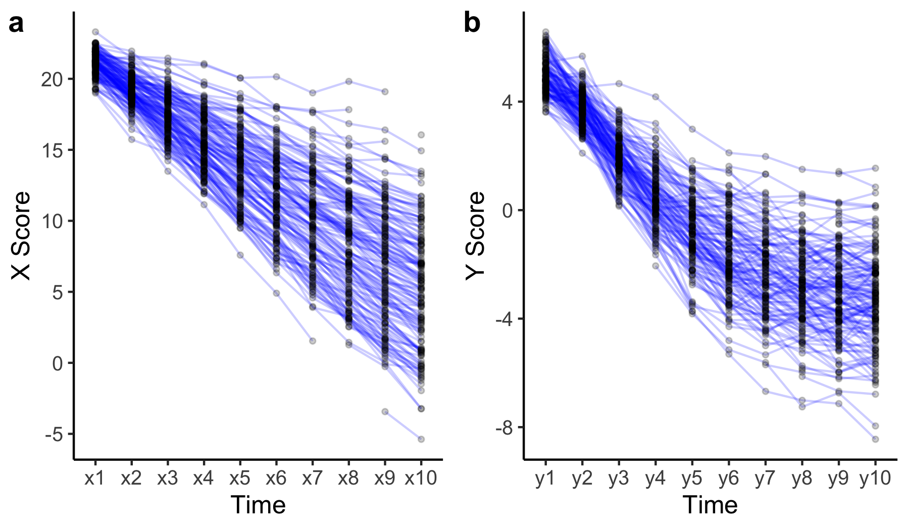
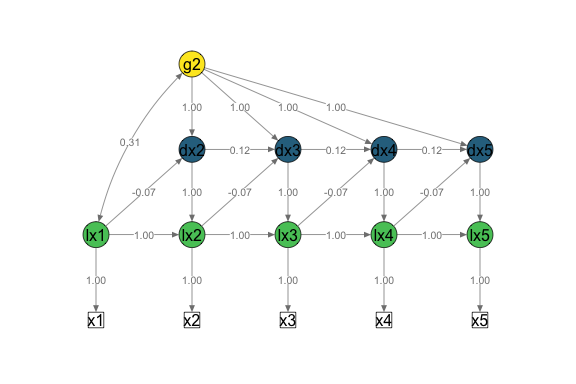
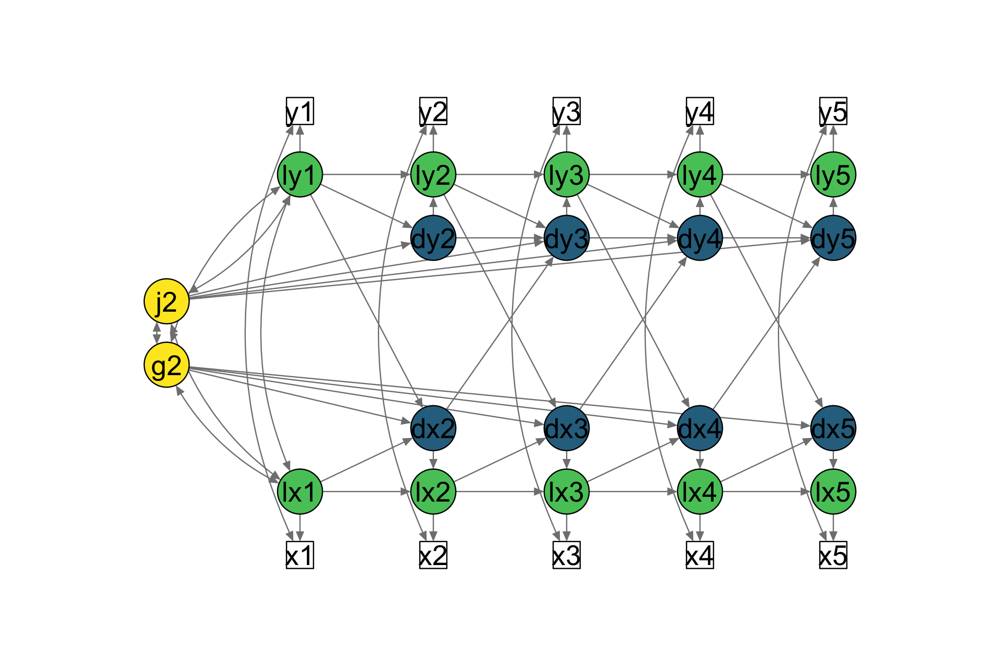

This package offers some helper functions to specify and analyse univariate and bivariate latent change score models (LCSM) using lavaan (Rosseel, 2012). For details about this method see for example McArdle (2009), Ghisletta (2012), Grimm et al. (2012), and Grimm, Ram & Estabrook (2017).
I started working on this project to better understand how latent change score modeling works. This package combines the strengths of other R packages like lavaan, broom, and semPlot by generating lavaan syntax that helps these packages work together.
An interactive web application shinychange illustrates some functions of this package. This is work in progress and feedback is very welcome!
Installation
You can install the development version from GitHub with:
Overview of the functions
The lcsm package contains the following functions that can be categorised into:
- Functions to generate lavaan syntax for different model specifications:
-
specify_uni_lcsm(): Generate syntax for univariate LCSM -
specify_bi_lcsm(): Generate syntax for bivariate LCSM
-
- Functions to fit models using lavaan:
-
fit_uni_lcsm(): Fit univariate LCSM -
fit_bi_lcsm(): Fit bivariate LCSM
-
- Functions to extract results from models using broom:
-
extract_fit(): Extract fit statistics -
extract_param(): Extract estimated parameters
-
- Simulate data using lavaan:
-
sim_uni_lcsm(): Simulate data by specifying parameters for a univariate LCSM -
sim_bi_lcsm(): Simulate data by specifying parameters for a bivariate LCSM
-
- Helper functions:
-
plot_lcsm(): Visualise LCSM using semPlot -
select_uni_cases(): Select cases for analysis based on available scores on one construct -
select_bi_cases(): Select cases for analysis based on available scores on two construct
-
How to use lcsm
Here are a few examples how to use the lcsm package.
Visualise data
Longitudinal data can be visualised using the plot_trajectories() function. Here only 30% of the data is visualised using the argument random_sample_frac = 0.3. Only consecutive measures are connected by lines as specified in connect_missing = FALSE.
# Create plot for construct x
plot_x <- plot_trajectories(data = data_bi_lcsm,
id_var = "id",
var_list = c("x1", "x2", "x3", "x4", "x5",
"x6", "x7", "x8", "x9", "x10"),
xlab = "Time", ylab = "X Score",
connect_missing = FALSE,
random_sample_frac = 0.3)
# Create plot for construct y
plot_y <- plot_trajectories(data = data_bi_lcsm,
id_var = "id",
var_list = c("y1", "y2", "y3", "y4", "y5",
"y6", "y7", "y8", "y9", "y10"),
xlab = "Time", ylab = "Y Score",
connect_missing = FALSE,
random_sample_frac = 0.3)
# Arrange plots next to each other using ggpubr::ggarrange()
ggpubr::ggarrange(plot_x,
plot_y,
labels = c("a", "b"))
#> Warning: Removed 13 rows containing missing values (geom_path).
#> Warning: Removed 75 rows containing missing values (geom_point).
#> Warning: Removed 35 rows containing missing values (geom_path).
#> Warning: Removed 169 rows containing missing values (geom_point).
Fit LCS models
In a first step the functions specify_uni_lcsm() and specify_bi_lcsm() are used to specify the lavaan syntax for a specific LCS model. The functions fit_uni_lcsm() and fit_bi_lcsm() are running specifying the syntax before passing it on to lavaan.
The following table descibes some of the different model specifications that the model arguments can take. More detail can be found in the help files help(fit_uni_lcsm).
Fit univariate LCS models
| Model specification | Description |
|---|---|
| alpha_constant | Constant change factor |
| beta | Proportional change factor |
| phi | Autoregression of change scores |
The example below shows how to specify a generic univariate latent change score model using the function specify_uni_lcsm(). A table of the description of all parameters that can be estimated is shown here.
specify_uni_lcsm(timepoints = 5,
var = "x",
change_letter = "g",
model = list(alpha_constant = TRUE,
beta = TRUE,
phi = TRUE))Click here to see the lavaan syntax specified
above.
# Specify latent true scores lx1 =~ 1 * x1 lx2 =~ 1 * x2 lx3 =~ 1 * x3 lx4 =~ 1 * x4 lx5 =~ 1 * x5 # Specify mean of latent true scores lx1 ~ gamma_lx1 * 1 lx2 ~ 0 * 1 lx3 ~ 0 * 1 lx4 ~ 0 * 1 lx5 ~ 0 * 1 # Specify variance of latent true scores lx1 ~~ sigma2_lx1 * lx1 lx2 ~~ 0 * lx2 lx3 ~~ 0 * lx3 lx4 ~~ 0 * lx4 lx5 ~~ 0 * lx5 # Specify intercept of obseved scores x1 ~ 0 * 1 x2 ~ 0 * 1 x3 ~ 0 * 1 x4 ~ 0 * 1 x5 ~ 0 * 1 # Specify variance of observed scores x1 ~~ sigma2_ux * x1 x2 ~~ sigma2_ux * x2 x3 ~~ sigma2_ux * x3 x4 ~~ sigma2_ux * x4 x5 ~~ sigma2_ux * x5 # Specify autoregressions of latent variables lx2 ~ 1 * lx1 lx3 ~ 1 * lx2 lx4 ~ 1 * lx3 lx5 ~ 1 * lx4 # Specify latent change scores dx2 =~ 1 * lx2 dx3 =~ 1 * lx3 dx4 =~ 1 * lx4 dx5 =~ 1 * lx5 # Specify latent change scores means dx2 ~ 0 * 1 dx3 ~ 0 * 1 dx4 ~ 0 * 1 dx5 ~ 0 * 1 # Specify latent change scores variances dx2 ~~ 0 * dx2 dx3 ~~ 0 * dx3 dx4 ~~ 0 * dx4 dx5 ~~ 0 * dx5 # Specify constant change factor g2 =~ 1 * dx2 + 1 * dx3 + 1 * dx4 + 1 * dx5 # Specify constant change factor mean g2 ~ alpha_g2 * 1 # Specify constant change factor variance g2 ~~ sigma2_g2 * g2 # Specify constant change factor covariance with the initial true score g2 ~~ sigma_g2lx1 * lx1 # Specify proportional change component dx2 ~ beta_x * lx1 dx3 ~ beta_x * lx2 dx4 ~ beta_x * lx3 dx5 ~ beta_x * lx4 # Specify autoregression of change score dx3 ~ phi_x * dx2 dx4 ~ phi_x * dx3 dx5 ~ phi_x * dx4
The function fit_uni_lcsm() can be used to fit a univariate LCS model using the sample data set data_uni_lcsm. This functions first writes the lavaan syntax specified in the model argument and passes it on to lavaaan::lavaan().
# Fit univariate latent change score model
fit_uni_lcsm(data = data_uni_lcsm,
var = c("x1", "x2", "x3", "x4", "x5",
"x6", "x7", "x8", "x9", "x10"),
model = list(alpha_constant = TRUE,
beta = FALSE,
phi = TRUE))
#> lavaan 0.6-5 ended normally after 66 iterations
#>
#> Estimator ML
#> Optimization method NLMINB
#> Number of free parameters 23
#> Number of equality constraints 16
#> Row rank of the constraints matrix 16
#>
#> Number of observations 500
#> Number of missing patterns 273
#>
#> Model Test User Model:
#> Standard Robust
#> Test Statistic 75.389 74.400
#> Degrees of freedom 58 58
#> P-value (Chi-square) 0.062 0.072
#> Scaling correction factor 1.013
#> for the Yuan-Bentler correction (Mplus variant)It is also possible to show the lavaan syntax that was created to fit the model by the function specify_uni_lcsm(). The lavaan syntax includes comments describing some parts of the syntax in more detail. To save the syntax in an object the argument return_lavaan_syntax_string has to be set to TRUE. This object can be returned in an easy to read format using cat(syntax), or as a simple string without the cat() function.
# Fit univariate latent change score model
syntax <- fit_uni_lcsm(data = data_uni_lcsm,
var = c("x1", "x2", "x3", "x4", "x5",
"x6", "x7", "x8", "x9", "x10"),
model = list(alpha_constant = TRUE,
beta = FALSE,
phi = TRUE),
return_lavaan_syntax = TRUE,
return_lavaan_syntax_string = TRUE)
# Return lavaan syntax in easy to read format
cat(syntax)Click here to see the lavaan syntax specified in
syntax.
# Specify latent true scores lx1 =~ 1 * x1 lx2 =~ 1 * x2 lx3 =~ 1 * x3 lx4 =~ 1 * x4 lx5 =~ 1 * x5 lx6 =~ 1 * x6 lx7 =~ 1 * x7 lx8 =~ 1 * x8 lx9 =~ 1 * x9 lx10 =~ 1 * x10 # Specify mean of latent true scores lx1 ~ gamma_lx1 * 1 lx2 ~ 0 * 1 lx3 ~ 0 * 1 lx4 ~ 0 * 1 lx5 ~ 0 * 1 lx6 ~ 0 * 1 lx7 ~ 0 * 1 lx8 ~ 0 * 1 lx9 ~ 0 * 1 lx10 ~ 0 * 1 # Specify variance of latent true scores lx1 ~~ sigma2_lx1 * lx1 lx2 ~~ 0 * lx2 lx3 ~~ 0 * lx3 lx4 ~~ 0 * lx4 lx5 ~~ 0 * lx5 lx6 ~~ 0 * lx6 lx7 ~~ 0 * lx7 lx8 ~~ 0 * lx8 lx9 ~~ 0 * lx9 lx10 ~~ 0 * lx10 # Specify intercept of obseved scores x1 ~ 0 * 1 x2 ~ 0 * 1 x3 ~ 0 * 1 x4 ~ 0 * 1 x5 ~ 0 * 1 x6 ~ 0 * 1 x7 ~ 0 * 1 x8 ~ 0 * 1 x9 ~ 0 * 1 x10 ~ 0 * 1 # Specify variance of observed scores x1 ~~ sigma2_ux * x1 x2 ~~ sigma2_ux * x2 x3 ~~ sigma2_ux * x3 x4 ~~ sigma2_ux * x4 x5 ~~ sigma2_ux * x5 x6 ~~ sigma2_ux * x6 x7 ~~ sigma2_ux * x7 x8 ~~ sigma2_ux * x8 x9 ~~ sigma2_ux * x9 x10 ~~ sigma2_ux * x10 # Specify autoregressions of latent variables lx2 ~ 1 * lx1 lx3 ~ 1 * lx2 lx4 ~ 1 * lx3 lx5 ~ 1 * lx4 lx6 ~ 1 * lx5 lx7 ~ 1 * lx6 lx8 ~ 1 * lx7 lx9 ~ 1 * lx8 lx10 ~ 1 * lx9 # Specify latent change scores dx2 =~ 1 * lx2 dx3 =~ 1 * lx3 dx4 =~ 1 * lx4 dx5 =~ 1 * lx5 dx6 =~ 1 * lx6 dx7 =~ 1 * lx7 dx8 =~ 1 * lx8 dx9 =~ 1 * lx9 dx10 =~ 1 * lx10 # Specify latent change scores means dx2 ~ 0 * 1 dx3 ~ 0 * 1 dx4 ~ 0 * 1 dx5 ~ 0 * 1 dx6 ~ 0 * 1 dx7 ~ 0 * 1 dx8 ~ 0 * 1 dx9 ~ 0 * 1 dx10 ~ 0 * 1 # Specify latent change scores variances dx2 ~~ 0 * dx2 dx3 ~~ 0 * dx3 dx4 ~~ 0 * dx4 dx5 ~~ 0 * dx5 dx6 ~~ 0 * dx6 dx7 ~~ 0 * dx7 dx8 ~~ 0 * dx8 dx9 ~~ 0 * dx9 dx10 ~~ 0 * dx10 # Specify constant change factor g2 =~ 1 * dx2 + 1 * dx3 + 1 * dx4 + 1 * dx5 + 1 * dx6 + 1 * dx7 + 1 * dx8 + 1 * dx9 + 1 * dx10 # Specify constant change factor mean g2 ~ alpha_g2 * 1 # Specify constant change factor variance g2 ~~ sigma2_g2 * g2 # Specify constant change factor covariance with the initial true score g2 ~~ sigma_g2lx1 * lx1 # Specify autoregression of change score dx3 ~ phi_x * dx2 dx4 ~ phi_x * dx3 dx5 ~ phi_x * dx4 dx6 ~ phi_x * dx5 dx7 ~ phi_x * dx6 dx8 ~ phi_x * dx7 dx9 ~ phi_x * dx8 dx10 ~ phi_x * dx9
Fit bivariate LCS models
The function fit_bi_lcsm() allowes to specify two univariate LCS models using the arguments model_x and model_x. These two constructs can then be connected using the coupling argument. More details can be found in the help files help(fit_bi_lcsm).
| Coupling specification | Description |
|---|---|
| coupling_piecewise | Piecewise coupling parameters |
| coupling_piecewise_num | Changepoint of piecewise coupling parameters |
| delta_con_xy | Change score x (t) determined by true score y (t) |
| delta_con_yx | Change score y (t) determined by true score x (t) |
| delta_lag_xy | Change score x (t) determined by true score y (t-1) |
| delta_lag_yx | Change score y (t) determined by true score x (t-1) |
| xi_con_xy | Change score x (t) determined by change score y (t) |
| xi_con_yx | Change score y (t) determined by change score x (t) |
| xi_lag_xy | Change score x (t) determined by change score y (t-1) |
| xi_lag_yx | Change score y (t) determined by change score x (t-1) |
fit_bi_lcsm(data = data_bi_lcsm,
var_x = c("x1", "x2", "x3", "x4", "x5",
"x6", "x7", "x8", "x9", "x10"),
var_y = c("y1", "y2", "y3", "y4", "y5",
"y6", "y7", "y8", "y9", "y10"),
model_x = list(alpha_constant = TRUE,
beta = TRUE,
phi = FALSE),
model_y = list(alpha_constant = TRUE,
beta = TRUE,
phi = TRUE),
coupling = list(delta_lag_xy = TRUE,
xi_lag_yx = TRUE))
#> lavaan 0.6-5 ended normally after 118 iterations
#>
#> Estimator ML
#> Optimization method NLMINB
#> Number of free parameters 87
#> Number of equality constraints 65
#> Row rank of the constraints matrix 65
#>
#> Number of observations 500
#> Number of missing patterns 210
#>
#> Model Test User Model:
#> Standard Robust
#> Test Statistic 191.851 193.021
#> Degrees of freedom 208 208
#> P-value (Chi-square) 0.782 0.764
#> Scaling correction factor 0.994
#> for the Yuan-Bentler correction (Mplus variant)Extract fit statistics and parmeters
The main underlying functions to extract parameters and fit statistics come from the broom package: broom::tidy() and broom::glance(). The functions extract_param() and extract_fit() offer some tools that I find helpful when running LCS models in R, for example:
-
extract_param(): only one row per estimated parameter, -
extract_fit(): fit statistics for multiple lavaan objects can be extracted.
A table of the description of all parameters that can be estimated is shown here.
# First create a lavaan object
bi_lcsm_01 <- fit_bi_lcsm(data = data_bi_lcsm,
var_x = c("x1", "x2", "x3", "x4", "x5",
"x6", "x7", "x8", "x9", "x10"),
var_y = c("y1", "y2", "y3", "y4", "y5",
"y6", "y7", "y8", "y9", "y10"),
model_x = list(alpha_constant = TRUE,
beta = TRUE,
phi = FALSE),
model_y = list(alpha_constant = TRUE,
beta = TRUE,
phi = TRUE),
coupling = list(delta_lag_xy = TRUE,
xi_lag_yx = TRUE))
# Now extract parameter estimates
# Only extract first 7 columns for this example by adding [ , 1:7]
param_bi_lcsm_01 <- extract_param(bi_lcsm_01)[ , 1:7]
# Print table of parameter estimates
kable(param_bi_lcsm_01, digits = 3)| label | estimate | std.error | statistic | p.value | conf.low | conf.high |
|---|---|---|---|---|---|---|
| gamma_lx1 | 21.066 | 0.036 | 588.187 | 0.000 | 20.996 | 21.136 |
| sigma2_lx1 | 0.493 | 0.037 | 13.485 | 0.000 | 0.421 | 0.564 |
| sigma2_ux | 0.201 | 0.004 | 45.301 | 0.000 | 0.192 | 0.210 |
| alpha_g2 | -0.309 | 0.053 | -5.834 | 0.000 | -0.413 | -0.205 |
| sigma2_g2 | 0.395 | 0.028 | 14.330 | 0.000 | 0.341 | 0.449 |
| sigma_g2lx1 | 0.155 | 0.022 | 7.017 | 0.000 | 0.112 | 0.198 |
| beta_x | -0.106 | 0.003 | -30.818 | 0.000 | -0.113 | -0.099 |
| gamma_ly1 | 5.025 | 0.029 | 172.786 | 0.000 | 4.968 | 5.082 |
| sigma2_ly1 | 0.208 | 0.019 | 10.860 | 0.000 | 0.171 | 0.246 |
| sigma2_uy | 0.193 | 0.005 | 39.698 | 0.000 | 0.183 | 0.202 |
| alpha_j2 | -0.203 | 0.039 | -5.217 | 0.000 | -0.279 | -0.127 |
| sigma2_j2 | 0.093 | 0.008 | 11.766 | 0.000 | 0.077 | 0.108 |
| sigma_j2ly1 | 0.017 | 0.008 | 2.156 | 0.031 | 0.002 | 0.032 |
| beta_y | -0.197 | 0.005 | -39.562 | 0.000 | -0.207 | -0.187 |
| phi_y | 0.144 | 0.029 | 4.963 | 0.000 | 0.087 | 0.201 |
| sigma_su | 0.009 | 0.003 | 2.581 | 0.010 | 0.002 | 0.015 |
| sigma_ly1lx1 | 0.185 | 0.021 | 8.905 | 0.000 | 0.144 | 0.225 |
| sigma_g2ly1 | 0.072 | 0.016 | 4.437 | 0.000 | 0.040 | 0.104 |
| sigma_j2lx1 | 0.093 | 0.012 | 7.916 | 0.000 | 0.070 | 0.117 |
| sigma_j2g2 | 0.005 | 0.012 | 0.463 | 0.643 | -0.018 | 0.029 |
| delta_lag_xy | 0.140 | 0.006 | 23.837 | 0.000 | 0.128 | 0.152 |
| xi_lag_yx | 0.360 | 0.037 | 9.634 | 0.000 | 0.287 | 0.433 |
Plot simplified path diagrams of LCS models
This function is work in progress and can only plot univariate and bivariate LCS models that were specified with fit_uni_lcsm() or fit_bi_lcsm(). Modified LCS models will probably return errors as the layout matrix that gets created by this plot function only supports the specifications that can be modelled with this package. The input arguments for plotting a simplified path dioagram are:
- the estimated lavaan object
lavaan_object, - the
lavaan_syntaxand , -
lcsmindicating whether the LCS model is “univariate” or “bivariate”
Optional arguments can be used to change the look of the plot, for example:
-
lcsm_colourscan be used to highlight the different parts of the latent change score model- white: observed scores
- green: latent true scores
- blue: latent change scores
- yellow: latent change scores
Further arguments can be passed on to semPlot::semPaths(), for example:
-
what, “path” to show unweighted gray edges, “par” to show parameter estimates as weighted (green/red) edges
-
whatLabels, “label” to show edege names as label or “est” for parameter estimates, “hide” to hide edge labels
Univariate LCS model
# Fit bivariate lcsm and save the results
uni_lavaan_results <- fit_uni_lcsm(data = data_uni_lcsm,
var = c("x1", "x2", "x3", "x4", "x5"),
model = list(alpha_constant = TRUE,
beta = TRUE,
phi = TRUE)
)
#> Warning in lav_data_full(data = data, group = group, cluster = cluster, : lavaan WARNING: some cases are empty and will be ignored:
#> 239
# Save the lavaan syntax that is used to create the layout matrix for semPlot
uni_lavaan_syntax <- fit_uni_lcsm(data = data_uni_lcsm,
var = c("x1", "x2", "x3", "x4", "x5"),
model = list(alpha_constant = TRUE,
beta = TRUE,
phi = TRUE),
return_lavaan_syntax = TRUE,
return_lavaan_syntax_string = TRUE)
# Plot the results
plot_lcsm(lavaan_object = uni_lavaan_results,
lavaan_syntax = uni_lavaan_syntax,
lcsm_colours = TRUE,
lcsm = "univariate")
#> Registered S3 methods overwritten by 'huge':
#> method from
#> plot.sim BDgraph
#> print.sim BDgraph
Bivariate LCS model
# Fit bivariate lcsm and save the results
bi_lavaan_results <- fit_bi_lcsm(data = data_bi_lcsm,
var_x = c("x1", "x2", "x3", "x4", "x5"),
var_y = c("y1", "y2", "y3", "y4", "y5"),
model_x = list(alpha_constant = TRUE,
beta = TRUE,
phi = FALSE),
model_y = list(alpha_constant = TRUE,
beta = TRUE,
phi = TRUE),
coupling = list(delta_lag_xy = TRUE,
xi_lag_yx = TRUE))
# Save the lavaan syntax that is used to create the layout matrix for semPlot
bi_lavaan_syntax <- fit_bi_lcsm(data = data_bi_lcsm,
var_x = c("x1", "x2", "x3", "x4", "x5"),
var_y = c("y1", "y2", "y3", "y4", "y5"),
model_x = list(alpha_constant = TRUE,
beta = TRUE,
phi = FALSE),
model_y = list(alpha_constant = TRUE,
beta = TRUE,
phi = TRUE),
coupling = list(delta_lag_xy = TRUE,
xi_lag_yx = TRUE),
return_lavaan_syntax = TRUE,
return_lavaan_syntax_string = TRUE)
# Plot the results
plot_lcsm(lavaan_object = bi_lavaan_results,
lavaan_syntax = bi_lavaan_syntax,
lcsm_colours = TRUE,
whatLabels = "hide",
lcsm = "bivariate")
Simulate data
The functions sim_uni_lcsm() and sim_bi_lcsm() simulate data based on some some parameters that can be specified. See the tables here for a full list of parameters that can be specified for the data simulation.
# Simulate some data
sim_uni_lcsm(timepoints = 5,
model = list(alpha_constant = TRUE, beta = FALSE, phi = TRUE),
model_param = list(gamma_lx1 = 21,
sigma2_lx1 = 1.5,
sigma2_ux = 0.2,
alpha_j2 = -0.93,
sigma2_j2 = 0.1,
sigma_j2lx1 = 0.2,
phi_x = 0.3),
sample.nobs = 1000,
na_pct = 0.3)
#> Parameter estimates for the data simulation are taken from the argument 'model_param'.
#> Warning: The following parameters are specified in LCS model but no parameter estimates have been entered in 'model_param':
#> - alpha_g2
#> - sigma2_g2
#> - sigma_g2lx1
#> # A tibble: 1,000 x 6
#> id x1 x2 x3 x4 x5
#> <int> <dbl> <dbl> <dbl> <dbl> <dbl>
#> 1 1 20.2 21.8 24.0 26.3 29.0
#> 2 2 NA NA 24.3 25.0 26.4
#> 3 3 21.6 NA NA 21.2 21.0
#> 4 4 NA 20.7 17.5 14.3 NA
#> 5 5 18.8 19.6 18.9 19.2 NA
#> 6 6 18.7 19.5 17.7 NA NA
#> 7 7 19.9 19.2 18.0 17.4 15.2
#> 8 8 21.0 22.0 25.0 27.4 29.9
#> 9 9 NA 19.8 20.2 NA 18.3
#> 10 10 20.1 20.7 NA 24.7 25.3
#> # … with 990 more rowsIt is also possible to return the lavaan syntax instead of simulating data for further manual specifications. The modified object could then be used to simulate data using lavaan::simulateData().
# Return lavaan syntax based on the following argument specifications
simsyntax <- sim_bi_lcsm(timepoints = 5,
model_x = list(alpha_constant = TRUE, beta = TRUE, phi = FALSE),
model_x_param = list(gamma_lx1 = 21,
sigma2_lx1 = .5,
sigma2_ux = .2,
alpha_g2 = -.4,
sigma2_g2 = .4,
sigma_g2lx1 = .2,
beta_x = -.1),
model_y = list(alpha_constant = TRUE, beta = TRUE, phi = TRUE),
model_y_param = list(gamma_ly1 = 5,
sigma2_ly1 = .2,
sigma2_uy = .2,
alpha_j2 = -.2,
sigma2_j2 = .1,
sigma_j2ly1 = .02,
beta_y = -.2,
phi_y = .1),
coupling = list(delta_lag_xy = TRUE,
xi_lag_yx = TRUE),
coupling_param = list(sigma_su = .01,
sigma_ly1lx1 = .2,
sigma_g2ly1 = .1,
sigma_j2lx1 = .1,
sigma_j2g2 = .01,
delta_lag_xy = .13,
xi_lag_yx = .4),
return_lavaan_syntax = TRUE)Click here to see the lavaan syntax specified in
simsyntax.
# Specify parameters for construct x ---- # Specify latent true scores lx1 =~ 1 * x1 lx2 =~ 1 * x2 lx3 =~ 1 * x3 lx4 =~ 1 * x4 lx5 =~ 1 * x5 # Specify mean of latent true scores lx1 ~ 21 * 1 lx2 ~ 0 * 1 lx3 ~ 0 * 1 lx4 ~ 0 * 1 lx5 ~ 0 * 1 # Specify variance of latent true scores lx1 ~~ 0.5 * lx1 lx2 ~~ 0 * lx2 lx3 ~~ 0 * lx3 lx4 ~~ 0 * lx4 lx5 ~~ 0 * lx5 # Specify intercept of obseved scores x1 ~ 0 * 1 x2 ~ 0 * 1 x3 ~ 0 * 1 x4 ~ 0 * 1 x5 ~ 0 * 1 # Specify variance of observed scores x1 ~~ 0.2 * x1 x2 ~~ 0.2 * x2 x3 ~~ 0.2 * x3 x4 ~~ 0.2 * x4 x5 ~~ 0.2 * x5 # Specify autoregressions of latent variables lx2 ~ 1 * lx1 lx3 ~ 1 * lx2 lx4 ~ 1 * lx3 lx5 ~ 1 * lx4 # Specify latent change scores dx2 =~ 1 * lx2 dx3 =~ 1 * lx3 dx4 =~ 1 * lx4 dx5 =~ 1 * lx5 # Specify latent change scores means dx2 ~ 0 * 1 dx3 ~ 0 * 1 dx4 ~ 0 * 1 dx5 ~ 0 * 1 # Specify latent change scores variances dx2 ~~ 0 * dx2 dx3 ~~ 0 * dx3 dx4 ~~ 0 * dx4 dx5 ~~ 0 * dx5 # Specify constant change factor g2 =~ 1 * dx2 + 1 * dx3 + 1 * dx4 + 1 * dx5 # Specify constant change factor mean g2 ~ -0.4 * 1 # Specify constant change factor variance g2 ~~ 0.4 * g2 # Specify constant change factor covariance with the initial true score g2 ~~ 0.2 * lx1 # Specify proportional change component dx2 ~ -0.1 * lx1 dx3 ~ -0.1 * lx2 dx4 ~ -0.1 * lx3 dx5 ~ -0.1 * lx4 # Specify parameters for construct y ---- # Specify latent true scores ly1 =~ 1 * y1 ly2 =~ 1 * y2 ly3 =~ 1 * y3 ly4 =~ 1 * y4 ly5 =~ 1 * y5 # Specify mean of latent true scores ly1 ~ 5 * 1 ly2 ~ 0 * 1 ly3 ~ 0 * 1 ly4 ~ 0 * 1 ly5 ~ 0 * 1 # Specify variance of latent true scores ly1 ~~ 0.2 * ly1 ly2 ~~ 0 * ly2 ly3 ~~ 0 * ly3 ly4 ~~ 0 * ly4 ly5 ~~ 0 * ly5 # Specify intercept of obseved scores y1 ~ 0 * 1 y2 ~ 0 * 1 y3 ~ 0 * 1 y4 ~ 0 * 1 y5 ~ 0 * 1 # Specify variance of observed scores y1 ~~ 0.2 * y1 y2 ~~ 0.2 * y2 y3 ~~ 0.2 * y3 y4 ~~ 0.2 * y4 y5 ~~ 0.2 * y5 # Specify autoregressions of latent variables ly2 ~ 1 * ly1 ly3 ~ 1 * ly2 ly4 ~ 1 * ly3 ly5 ~ 1 * ly4 # Specify latent change scores dy2 =~ 1 * ly2 dy3 =~ 1 * ly3 dy4 =~ 1 * ly4 dy5 =~ 1 * ly5 # Specify latent change scores means dy2 ~ 0 * 1 dy3 ~ 0 * 1 dy4 ~ 0 * 1 dy5 ~ 0 * 1 # Specify latent change scores variances dy2 ~~ 0 * dy2 dy3 ~~ 0 * dy3 dy4 ~~ 0 * dy4 dy5 ~~ 0 * dy5 # Specify constant change factor j2 =~ 1 * dy2 + 1 * dy3 + 1 * dy4 + 1 * dy5 # Specify constant change factor mean j2 ~ -0.2 * 1 # Specify constant change factor variance j2 ~~ 0.1 * j2 # Specify constant change factor covariance with the initial true score j2 ~~ 0.02 * ly1 # Specify proportional change component dy2 ~ -0.2 * ly1 dy3 ~ -0.2 * ly2 dy4 ~ -0.2 * ly3 dy5 ~ -0.2 * ly4 # Specify autoregression of change score dy3 ~ 0.1 * dy2 dy4 ~ 0.1 * dy3 dy5 ~ 0.1 * dy4 # Specify residual covariances x1 ~~ 0.01 * y1 x2 ~~ 0.01 * y2 x3 ~~ 0.01 * y3 x4 ~~ 0.01 * y4 x5 ~~ 0.01 * y5 # Specify covariances betweeen specified change components (alpha) and intercepts (initial latent true scores lx1 and ly1) ---- # Specify covariance of intercepts lx1 ~~ 0.2 * ly1 # Specify covariance of constant change and intercept within the same construct ly1 ~~ 0.1 * g2 # Specify covariance of constant change and intercept within the same construct lx1 ~~ 0.1 * j2 # Specify covariance of constant change factors between constructs g2 ~~ 0.01 * j2 # Specify between-construct coupling parameters ---- # Change score x (t) is determined by true score y (t-1) dx2 ~ 0.13 * ly1 dx3 ~ 0.13 * ly2 dx4 ~ 0.13 * ly3 dx5 ~ 0.13 * ly4 # Change score y (t) is determined by change score x (t-1) dy3 ~ 0.4 * dx2 dy4 ~ 0.4 * dx3 dy5 ~ 0.4 * dx4
Overview of estimated LCS model parameters
Univariate LCS models
Depending on the specified model, the following parameters can be estimated for univariate LCS models:
| Parameter | Description |
|---|---|
| gamma_lx1 | Mean of latent true scores x (Intercept) |
| sigma2_lx1 | Variance of latent true scores x |
| sigma2_ux | Variance of observed scores x |
| alpha_g2 | Mean of change factor (g2) |
| alpha_g3 | Mean of change factor (g3) |
| sigma2_g2 | Variance of change factor (g2) |
| sigma2_g3 | Variance of change factor (g3) |
| sigma_g2lx1 | Covariance of change factor (g2) with the initial true score x |
| sigma_g3lx1 | Covariance of change factor (g3) with the initial true score x |
| sigma_g2g3 | Covariance of change factors within construct x |
| beta_x | Proportional change x |
| phi_x | Autoregression of change scores x |
Bivariate LCS models
For bivariate LCS models, estimated parameters can be categorised into
(1) Construct X, (2) Construct Y, and (3) Coupling between X and Y.
| Parameter | Description |
|---|---|
| Construct X | |
| gamma_lx1 | Mean of latent true scores x (Intercept) |
| sigma2_lx1 | Variance of latent true scores x |
| sigma2_ux | Variance of observed scores x |
| alpha_g2 | Mean of change factor (g2) |
| alpha_g3 | Mean of change factor (g3) |
| sigma2_g2 | Variance of change factor (g2) |
| sigma2_g3 | Variance of change factor (g3) |
| beta_x | Proportional change x |
| sigma_g2lx1 | Covariance of change factor (g2) with the initial true score x (lx1) |
| sigma_g3lx1 | Covariance of change factor (g3) with the initial true score x (lx1) |
| sigma_g2g3 | Covariance of change factors within construct x |
| phi_x | Autoregression of change scores x |
| Construct Y | |
| gamma_ly1 | Mean of latent true scores y (Intercept) |
| sigma2_ly1 | Variance of latent true scores y |
| sigma2_uy | Variance of observed scores y |
| alpha_j2 | Mean of change factor (j2) |
| alpha_j3 | Mean of change factor (j3) |
| sigma2_j2 | Variance of change factor (j2) |
| sigma2_j3 | Variance of change factor (j3) |
| beta_y | Proportional change y |
| sigma_j2ly1 | Covariance of change factor (j2) with the initial true score y (ly1) |
| sigma_j3ly1 | Covariance of change factor (j3) with the initial true score y (ly1) |
| sigma_j2j3 | Covariance of change factors within construct y |
| phi_y | Autoregression of change scores y |
| Coupeling X & Y | |
| sigma_su | Covariance of residuals x and y |
| sigma_ly1lx1 | Covariance of intercepts x and y |
| sigma_g2ly1 | Covariance of change factor x (g2) with the initial true score y (ly1) |
| sigma_g3ly1 | Covariance of change factor x (g3) with the initial true score y (ly1) |
| sigma_j2lx1 | Covariance of change factor y (j2) with the initial true score x (lx1) |
| sigma_j3lx1 | Covariance of change factor y (j3) with the initial true score x (lx1) |
| sigma_j2g2 | Covariance of change factors y (j2) and x (g2) |
| sigma_j2g3 | Covariance of change factors y (j2) and x (g3) |
| sigma_j3g2 | Covariance of change factors y (j3) and x (g2) |
| delta_con_xy | Change score x (t) determined by true score y (t) |
| delta_con_yx | Change score y (t) determined by true score x (t) |
| delta_lag_xy | Change score x (t) determined by true score y (t-1) |
| delta_lag_yx | Change score y (t) determined by true score x (t-1) |
| xi_con_xy | Change score x (t) determined by change score y (t) |
| xi_con_yx | Change score y (t) determined by change score x (t) |
| xi_lag_xy | Change score x (t) determined by change score y (t-1) |
| xi_lag_yx | Change score y (t) determined by change score x (t-1) |